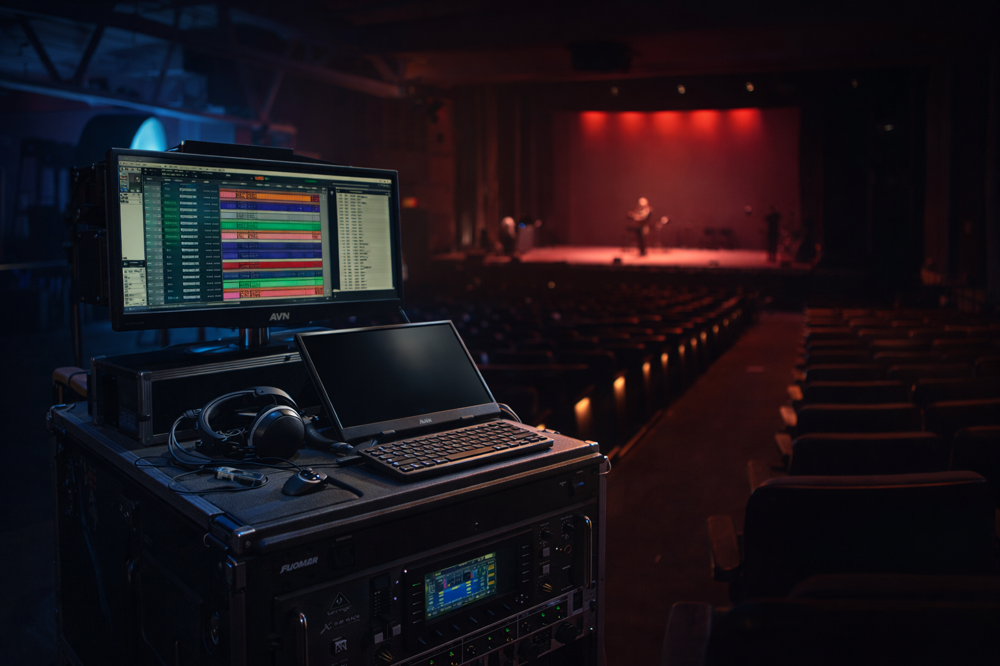

Onsite multitrack recording for music, dance, and staged performance. Also available for select production sound applications that require complex multi-mic setups, live mix support, and individual headphone mixes.
This service is best suited to productions where audio needs go beyond a lightweight bag rig — such as ensemble performance, multiple performers on mic at once, video-driven live events, or situations where a clean live feed and isolated tracks are both important.